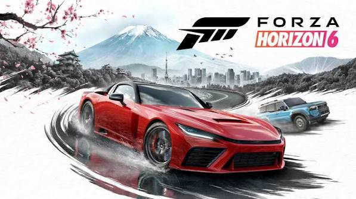
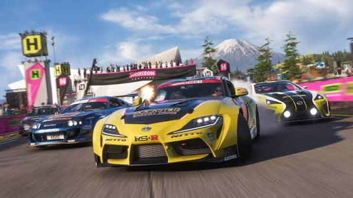
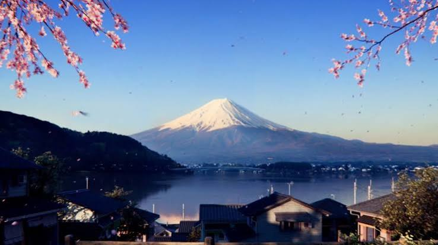

Forza Horizon 6 é o capítulo da consagrada franquia de corrida em mundo aberto da Playground Games e Xbox Game Studios. Lançado em 19 de maio de 2026 para Xbox Series X|S e PC (com chegada ao Game Pass no primeiro dia), o jogo traz um dos cenários mais aguardados pela comunidade:
Desta vez, o festival abandona a fórmula de te colocar imediatamente como "superastro". Você começa como um turista construindo sua reputação pelas estradas e pela cultura automotiva japonesa.



| Aspectos | Detalhes |
|---|---|
| Ambientação | Passagens de montanha (tōge) como Mt. Haruna, rodovias inspiradas na C1 Loop e a maior área urbana já vista na franquia (Tóquio e subúrbios). |
| Construção & Modos | Modos inéditos como Horizon CoLab (construção colaborativa no EventLab) e personalização de propriedades (Estates) no mundo aberto. |
| Acessibilidade & Som | Captação sonora autêntica gravada nas 4 estações no Japão e modo de Alto Contraste altamente customizável. |